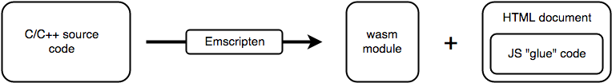

Oleksii Vasyliev, Railsware
Brought to you by Alexey Vasiliev, Railsware
The Emscripten tool is able to take just about any C/C++ source code and compile it into a .wasm module, plus the necessary JavaScript "glue" code for loading and running the module, and an HTML document to display the results of the code
package main
import (
"fmt"
)
func main() {
fmt.Println("Hello World")
// Prevent the function from returning, which is required in a wasm module
<-make(chan bool)
}cp "$(go env GOROOT)/misc/wasm/wasm_exec.js" .
GOOS=js GOARCH=wasm go build -o main.wasmconst loadWasm = (path) => {
const go = new Go()
return new Promise((resolve, reject) => {
WebAssembly.instantiateStreaming(fetch(path), go.importObject)
.then(result => {
go.run(result.instance)
resolve(result.instance)
})
.catch(error => {
reject(error)
})
})
}
// Load the wasm file
loadWasm("main.wasm").then(wasm => {
console.log("main.wasm is loaded ")
}).catch(error => {
console.error("ouch", error)
}) package main
import (
"syscall/js"
)
func main() {
message := "Hello World"
document := js.Global().Get("document")
h2 := document.Call("createElement", "h2")
h2.Set("innerHTML", message)
document.Get("body").Call("appendChild", h2)
<-make(chan bool)
}func MyGoFunc() js.Func {
return js.FuncOf(func(this js.Value, args []js.Value) interface{} {
// Get the current time as a Go time.Time object
now := time.Now()
// Get the Date object constructor from JavaScript
dateConstructor := js.Global().Get("Date")
// Return a new JS "Date" object with the time from the Go "now" variable
// We're passing the UNIX timestamp to the "Date" constructor
// Because JS uses milliseconds for UNIX timestamp, we need to multiply the timestamp by 1000
return dateConstructor.New(now.Unix() * 1000)
})
}| Go | JavaScript |
| ---------------------- | ---------------------- |
| js.Value | [its value] |
| js.Func | function |
| nil | null |
| bool | boolean |
| integers and floats | number |
| string | string |
| []interface{} | new array |
| map[string]interface{} | new object |